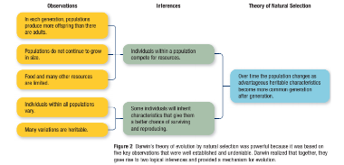
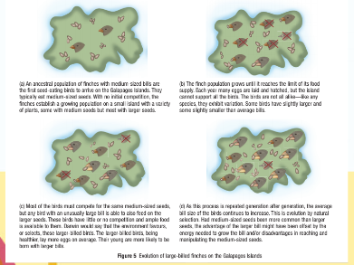
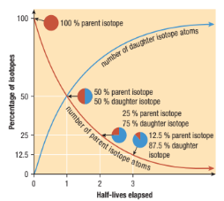
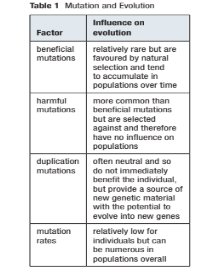
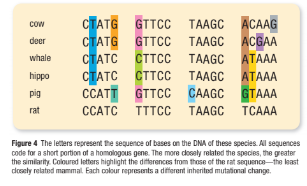
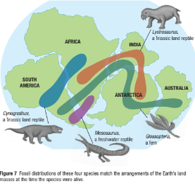

On the Origin of Species
Callout
On The Origin of Species

Darwin’s On the Origin of Species was published in 1859, and is a work of scientific literature by Charles Darwin, considered to be the foundation of evolutionary biology.

- Darwin's book introduced the scientific theory that populations evolve over the course of generations through a process of natural selection.

- The book presented a body of evidence that the diversity of life arose by common descent through a branching pattern of evolution.
- Darwin continued to research and extensively revise his theory while focusing on his main work of publishing the scientific results of the Beagle voyage.

- He tentatively wrote of his ideas to Lyell in January 1842.
- Then in June he roughed out a 35-page "Pencil Sketch" of his theory.

Darwin began correspondence about his theorising with the botanist Joseph Dalton Hooker in January 1844, and by July had rounded out his "sketch" into a 230-page "Essay", to be expanded with his research results and published if he died prematurely.


- In 1844, Darwin wrote to his friend Sir Joseph Hooker, declaring:
“At last gleams of light have come, and I am almost convinced (quite contrary to opinion I started with) that species are not (it is like confessing a murder) immutable. . . . I think I have found out . . . the simple way by which species become exquisitely adapted to various ends.”

Aware that any theory of evolution would be controversial and rigorously challenged, Darwin continued to gather evidence and look for flaws and weaknesses in his own reasoning.
Alfred Russell Wallace outlined his own theory of how species evolved. His theory was almost a perfect match to Darwin’s.
Alfred Russell Wallace

Darwin published a detailed account of his theory in a 502-page book entitled On the Origin of Species by Means of Natural Selection or the Preservation of Favoured Races in the Struggle for Life. The book sold out on the first day.
The Theory of Evolution by Natural Selection
Darwin described natural selection as the way in which the environment, or nature, favours the reproductive success of certain individuals over others.

What is the Theory of Natural Selection?
A contemporary of Darwin’s, Herbert Spencer, used the phrase survival of the fittest to describe the process of natural selection.

It suggested that organisms best adjusted to their environment are the most successful in surviving and reproducing.

The theory of evolution by natural selection could be extended to virtually every biological characteristic or adaptation.
Darwin understood that with a diversity of environments, the process of natural selection acting over thousands of generations could produce an unlimited variety of species.
Callout
Prediction
The theory of evolution by natural selection enables scientists to make predictions about how species may change over time. Many of these predictions are associated with changing environments.

The theory of natural selection also predicted the evolution of antibiotic resistance in bacteria and pesticide resistance in insects. Individuals in a population are naturally variable, meaning that they are all different in some ways. This variation means that some individuals have traits better suited to the environment than others.

TESTING AND FALSIFICATION
Table 1 illustrates a few of the kinds of evidence that could falsify the theory of evolution as well as the evidence that currently exists.

Explanatory Power

Darwin knew that if evolution had not occurred, if species had not changed over time, it should be easy to find falsifying evidence. His confidence in the theory was greatly strengthened by the complete absence of such evidence
.png)
To summarize:
- Darwin’s theory of evolution by means of natural selection explains how the environment acts to favour the reproductive success of individuals with certain heritable traits over others.
- Darwin’s theory of evolution by means of natural selection can be used to make predictions about the future evolution of species.

- Darwin’s theory of evolution by means of natural selection is able to explain how an adaptation can arise.
- Darwin’s theory of evolution by means of natural selection is a testable scientific theory.
What is Modern Theory of Evolution?

The neo‐Darwin view of evolution incorporates modern understanding of population genetics, developmental biology, and paleontology, to which is being added knowledge of the molecular sequencing of DNA and the insights it provides concerning the phylogeny of life.

What is Radiometric Dating?

Radiometric dating, radioactive dating or radioisotope dating is a technique which is used to date materials such as rocks or carbon, in which trace radioactive impurities were selectively incorporated when they were formed.
Radioisotopes are atoms that undergo radioactive decay—a process in which the nucleus of an atom changes and releases a subatomic particle.
Half-life is the time required for half the
quantity of a radioactive substance to undergo decay; the half-life is a constant for any given isotope.

Callout
The Modern Synthesis
Modern evolutionary synthesis is the modern theory of evolution that takes into account all branches of biology.

The Modern Synthesis describes the fusion(merger) of Mendelian genetics with Darwinian evolution that resulted in a unified theory of evolution. It is sometimes referred to as the Neo-Darwinian theory.

A gene pool consists of all the alleles of all individuals that are currently present in a particular species or population.
Mutations: The Source of Variation

A genetic mutation is a change in DNA. The bases that make up DNA may be switched or lost, and/or new bases may be inserted.

Sexual reproduction recombines, or shuffles, these alleles and produces an almost unlimited number of combinations.

Gene duplication is an important type of mutation because it is a source of new genes.
The Effects of Mutation
As you learned in Section 7.1, mutations can be neutral, beneficial, or harmful. Most mutations are neutral because they occur in non-coding portions of DNA and therefore produce no visible change in an individual.

Mutation rates

Individual mutation rates are very difficult to estimate, but recent studies suggest that species with large genomes are likely to have mutation rates averaging more than one per individual.A similar high incidence of mutation occurs in all species with large populations.

Homologous Genes and Pseudogenes

All mammals, for example, have similar numbers and arrangements of bones because they have inherited this pattern from a common ancestor. Similarly, closely related species inherit homologous genes.
Species also have pseudogenes—genes that have undergone mutations and no longer serve a useful purpose.

A pseudogene is a vestigial gene that no longer codes for a functioning protein
Species also have pseudogenes—genes that have undergone mutations and no longer serve a useful purpose.

Pseudogenes are nonfunctional segments of DNA that resemble functional genes.
Modern Paleontology


The distribution of fossils provided Darwin with important evidence for his theory of evolution. He discovered fossil remains of giant prehistoric mammals that were similar in form to present-day armadillos and sloths living in the same region.

Plate tectonics is the scientific theory that describes the large-scale movements and features of Earth’s crust
Modern Paleontology
